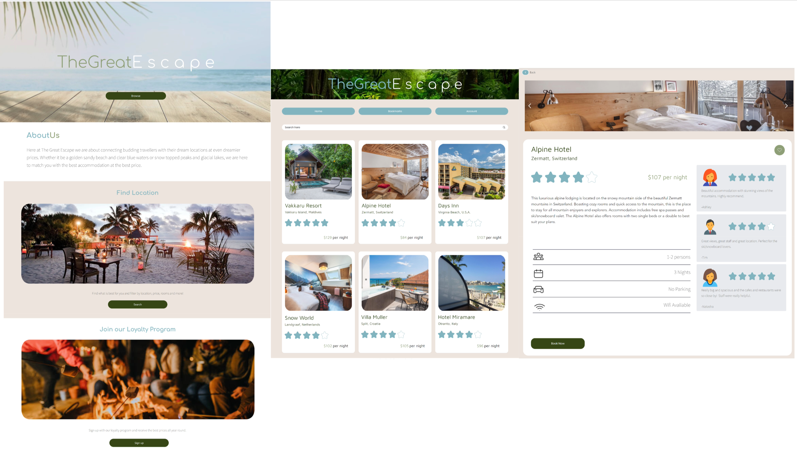

Heading into this course I was excited to learn about the processes and decision base journeys that lead to the design and creation of new websites. The introduction to the course highlighted to me the varying points of interest not only in the course but by the people taking it. There were a wide array of people with varying backgrounds.
My hopes and goals for this course are to develop skills in creating a website that is both functional and aesthetically pleasing.
The first part about this week that caught my eye was seeing how much the way we have used websites has changed. Showing how websites looked in the 90s compared to what I am used to seeing on a day to day basis.
I was also intrigued with the concepts of user personas. I had never thought about how the web designer would create identities for their target audience to better understand how they should design their website.
Learning about personas helped me understand what I wanted to create in my website and who I wanted to create it for. This led to the creation of “kevin”, a university graduate looking to travel abroad on a budget. This persona was intended to be a user of a future travel website of my own design.
I haven't yet started on the HTML basics of the week but look forward to developing my coding skills in the coming weeks
TWO
THREE
The first part of the week I caught up on the HTML basics, including implementing headers and pictures onto a website. I've struggled with coding in the past and I'm sure once I get further into the course I will struggle also, but for the building blocks so far I feel comfortable and confident in repeating the process without difficulty.
Following on from the user persona I started working on the next step in the first assignment. The Venn Diagram. This was to match the website designer goals with the users goals for when they use a website. From the designers point of view, goals included things such as an enjoyable user experience and an intuitive process of use. While the users goals included things such as map location of the area and traveling when prices are lower. The combined goals I established were the ability to filter by price and location and having access to product reviews.
The second HTML basics followed similarly from the first, with the inclusion of adding lists and numbered lists. In the exercise I followed along how to list different types of teas. The lists included both headers and images. I had a few issues with file locations that meant I couldn't find the image to place on the website. This was because I'd managed to create duplicates of the save and it was trying to pull the images from outside the file location. After resolving that I managed to duplicate the model shown in the video.
Assignment 1 continued this week with the introduction of customer journey maps and user flow charts. When I first saw these I thought they were pretty much the same thing, “how does a user make their way through a website”. However after rewatching the lecture and reviewing past students' work I realized the customer journey map was a more holistic approach to not only the journey through the website but also the motivations and feelings on the decisions the user will make. In creating my own journey map I tried to envisage myself in my user personas shoes, so I could get an understanding of how they might think and feel when approaching the idea of using a travel/accommodation website.
In creating my user flow chart I looked at implementing my ideals into what the user would experience on my website. I wanted to emphasize the simplicity of the website process as to show the ease at which the user would be able to navigate into finding and booking the accommodation they desire. I also wanted to implement the ability to make an account, while not a required step for the user to use my website. It helps with both user tracking to promote product deals in the future while providing current discounts to their bookings to incentivise sign ups and return usage of my website.
FOUR
FIVE
This week was just a race to the finish line to hand in Assignment 1. I had been behind on work in the past couple weeks so I wanted to make sure I had everything completed after feedback given from the tutors. This included some adjustments to my user flow chart making it simpler and taking out unnecessary loops, as well as what sort of thing to be writing about in the project rationale. I also went back to my user persona and added more context and depth to the choices I made about their interests and motivations as my first go round left too much variation and vagueness into who they were and how they operated.
My overall feelings of my first project in this course were positive. With an introduction to HTML coding and using processes I hadn't thought about when designing websites, I felt I had a good idea on the direction I wanted to take my future assignments. I was happy with the idea of creating a travel accommodation website and thought that the work I’d completed would help me with design decisions going forward. I’m still nervous and a little worried about more complex coding that would come in future projects but I know that I can go over previous video exemplars as well as find tutorials online to help.
Assignment 2.1 was about creating and developing not functioning stills of what our websites would look like. I think I was a little naive heading into this week as there were many things I hadn't even considered when making the visuals for my site. Obviously text and color would be a large part in creating any website but I hadn't considered the cohesiveness required between pages to make the visual experience both enjoyable and easy to use.
I started creating the templates for my website in figma. I had not used figma before however found it very intuitive and easy to pick up which helped me progress and make changes at a faster rate. The first thing we did was create wireframes, basically really quick rough sketches of the outline of the website pages, including orientation and image positioning. This helped me visualize what steps to take next as well as see physically what my ideas in my head looked like mapped out.
From the work on the wireframes I started developing the look of my site with the inclusion of color, imagery and fonts. I knew I wanted to have a really light and colorful webpage that was inviting to each potential user. I settled quickly on a combination of blue green and beige, taking the colors from an image of a sandy beach. Then I chose a relaxed font that matched the overall aesthetic and vibe.
SIX
SEVEN
This week I picked up where I left off in week 6. I made some changes to the layout of my pages including vertical spacing and rounding the hard edges of color blocks to match the softness of the text I had been using. After some feedback from my tutors I also adjusted the coloring of some of the headers as well as the color blocked backgrounds, these changes just made things easier to read so my users have a more enjoyable viewing experience.
Once I was happy with the changes I made I created my final prototype that refined some of the aforementioned changes but also added something I talked about in assignment 1, the ability to filter products for the user. I added another page that included sliders and dropdown menus that allowed the user to refine their search so that they could find products more efficiently and more suited to their own individual requirements. I reused most of the text from the development phases, cataloging them in a “design guide” section of my figma file. This section also included the objects that feature throughout my webpage, such as buttons, search bars and hex values of the colors I used.
After finalizing and handing in my work, I felt content with my work and how it viewed to potential users. I am slightly concerned or unsure how it would translate into a functioning website as required in assignment 2.2. However while I think some things might not translate, I think the overall feel and look of the website will remain consistent with my design plans.
For Assignment 2.2 we were offered two submission options. Either use HTML coding or a CMS to create our websites from project 2.1. I still felt like my coding skills were slightly below par so I opted for the CMS option, requiring me to create my journal using coding for Assignment 3.
Similarly to Figma I had also never used a CMS tool before and definitely struggled to use both EditorX and Webflow off the bat. All of the websites or design apps I've used have all had different shortcuts or navigation methods so I found myself struggling to complete basic tasks. After a couple of days of just playing around in EditorX and watching some youtube tutorials I started to get the hang of how things worked and was able to finally start implementing my designs in figma into EditorX.
I started out by segmenting my work into segments allowing the use of adding images, buttons and text into each section corresponding to my figma design. I wanted to lay out each page first before bringing across the finer details such as color and font. This helped me understand how each page would look and feel from a user perspective as well as give me a better understanding of how everything would work.
EIGHT
NINE
Unfortunately this week was disrupted by a lack of internet connection. However, in this time I decided on the main flow of my website I wanted to present in the final submission. My goal was to present a journey from the landing page, through the browsing of products and finishing with a product itself. I felt these pages gave the best understanding of what my websites aims to achieve and would also be achievable to complete in time for the projects due date.
This week I was able to get back on track and close in on completing assignment 2.2. I faced a few more challenges in transferring my ideas from figma into EditorX. The biggest issue I found was that all my work looked how I intended, but only at a certain screen resolution. As soon as any adjustments were made the entire page was skewed out of proportion and became unusable. I discovered that I had set buffers and margins based on pixel size rather than a percentage of the page size so while the screen size increased or decreased the location of objects would stay fixed rather than scaling and moving how I wanted.
This issue of fixed location and size came up multiple times and was very confusing to me at first. Most of the objects in each section of a page were in containers however when I tried to set them to a percentage of the section sometimes the whole section would disappear as the section had no minimum size and was only influenced by the bounds within it. Similarly the rounded edges I had brought through from my static web page design in figma only scaled in pixels so I had to reduce the severity of the rounding so that in smaller resolutions didn't make the containers fully circular.
Reflecting back on the progress I've made so far in the assignment I am very pleased both with how my website is looking but also how I have been able to make on the fly adjustments. With more time I would have liked to add the filtering page from the static design in figma to allow users to refine their search.
TEN

ELEVEN
I felt confident and nervous when presenting my work. I was proud of the work I had completed however I still felt that I could produce a more refined product. That being said I believe what I produced is a cohesive segway from both assignment 1 and assignment 2.1.
After finalizing and submitting both the website and the presentation, I wanted to recap most of the coding videos so I could be up to speed before working on programming the journal/blog of the course as a whole. By deciding to use CMS to design my website I am required to code a website link presenting the weekly learnings and thoughts on the projects and the course as a whole.
I started working through the tutorials again adjusting the tools taught to best suit what I wanted to present. Initially I was going to use buttons to change and hide displays of weekly content however I lacked the knowledge of javascript to achieve what I hoped. After reconsidering my plans I decided it would be better to present a flow of work rather than individual slides, as this would show the gradual progress throughout the course. After creating the template all that is left is to fill it out with my course content.
At the beginning of this course I hoped to gain a better understanding into the thoughts and processes that go into the design and development of a website. Throughout this course I have enjoyed learning the way website designers approach each task in order to create a site that best achieves both theirs and their users goals. In creating a website of my own using CMS and then coding a blog in HTML, I believe I have achieved the task I set myself at the beginning of the course. The knowledge I have gained I believe will also help my career going forward as a designer, adding another skill set to call on when required.